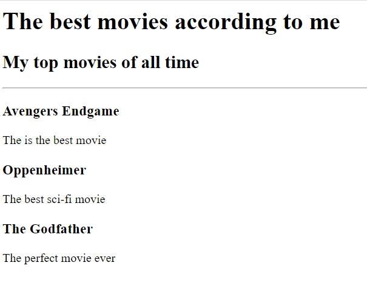
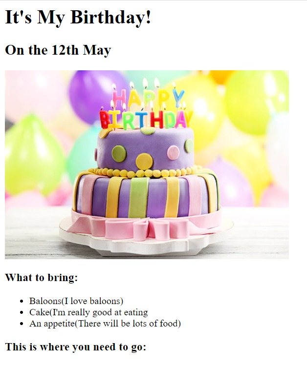

<!-- TODO 1: Create the HTML Boilerplate -->
<h1>Vineet Goel's Portfolio</h1>
<h2>I am a web developer</h2><hr>
<h2>First Project</h2>
<!-- TODO 2: Add Your previous projects' HTML into the public folder -->
<a href="./public/movie.html">Movie Rank Project</a>
<!-- TODO 3: Take screenshots of your project previews and add the images to the images folder -->

<!-- TODO 4: Add titles/subtitles etc. -->
<h2>Second project</h2>
<!-- TODO 5: Add a link to the project pages -->
<a href="./public/birthday.html">Birthday Invite Project</a>
<!-- TODO 6: Add images to show the project previews
HINT for TODO 6: You can use the height attribute set to 200 to make the image smaller:
https://developer.mozilla.org/en-US/docs/Web/HTML/Element/img#attr-height -->

<!-- TODO 7: Add the Contact Me and About Me page links --><br>
<a href="./public/contact.html">Contact Me</a><br>
<a href="./public/about.html">About Me</a>